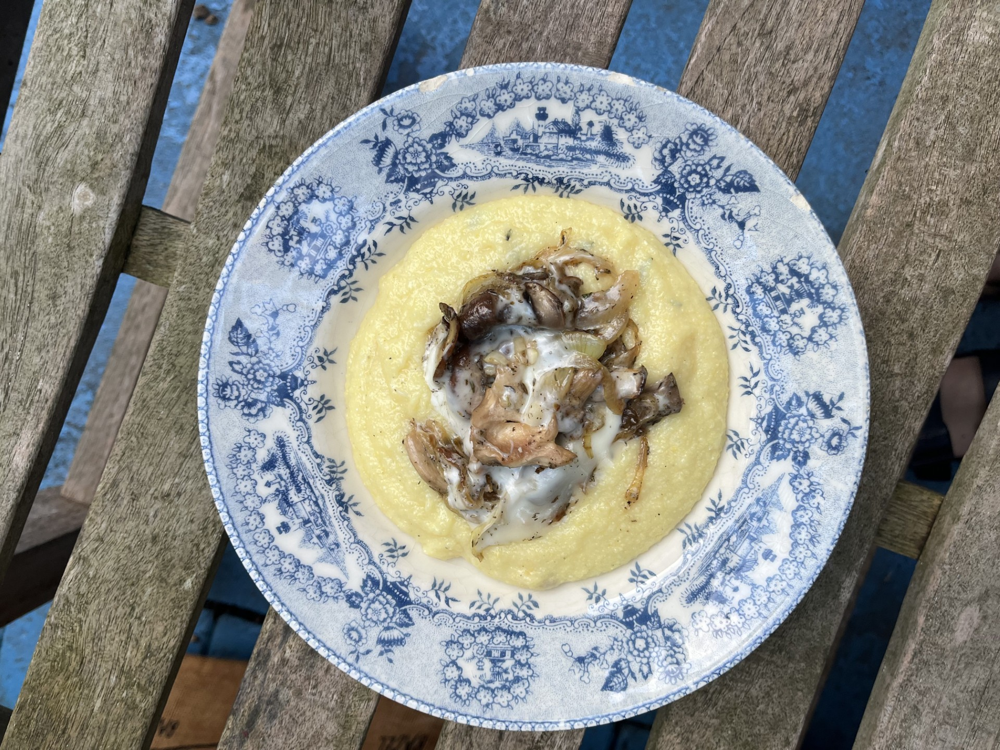

January Favourite Eats
I hope you're all congratulating yourselves on getting through the darkest weeks of the year! I can't wait for the sun to keep setting later and later- every minute counts. If you're in need of any recipe inspiration to get you through the rest of winter, here are the best things I cooked and baked in January.
Raspberry Streusel Cake
Find the recipe here: The Guardian
Unconventional for a January cake but sometimes you just need a taste of summer to get you through! A friend of mine introduced me to this recipe by Hugh Fearnley Whittingstall a few years ago and I've now made it at least 5 times. Some have been better than others but when the bake goes well there is nothing more I want from a cake. Crunchy, buttery crumble topping, freshness and a bit of acidity from the raspberries in the middle, and a delicate sponge at the bottom.
While the cake has two components (the crumble and the sponge), it is incredibly quick and simple to make. The only downside to making it in winter is the lack of fresh raspberries with which to decorate it– but topped with a good dusting of icing sugar no one will notice.
My tips:
• Given the scarcity and cost of raspberries in January, I used frozen raspberries this time around and they worked really well. I usually follow the recipe's suggested 200g of raspberries but this time I used about 250g and would recommend this – the cake needs a good amount of raspberries to give it enough flavour and texture.
• I ended up leaving the cake in the oven for an extra 10 minutes – while accidental, I would also recommend this if your cake doesn't quite look done after 45 minutes. I've made versions in the past where the sponge has been a little underdone after 45 minutes. I also tend not to toast the almonds as I find they get a good amount of colour from the oven anyway.

Rosemary Polenta with Mixed Mushrooms and Taleggio
Find the recipe here: Ottolenghi
A true winter warmer, this Ottolenghi recipe is brilliant when you want something hearty and comforting but don't want to go through all the effort needed to make a lasagne or shepherd's pie. Despite not being the most vibrant dish, I think it looks really pretty on a nice plate and would be a fab vegetarian main for a dinner party.
I've made this recipe a couple times now, always using the traditional polenta which takes a while to cook (around 45 minutes) because it's all that I had on hand. Ottolenghi does say you can also use the quick cook version, which would make this a great weekday dinner option too.
My tips:
• I tend to skip the tarragon because I'm not a fan of the aniseed flavour and it still tastes great!
• I sliced an onion and caramelised it in the pan before adding the mushrooms.
• The first time I made it, I followed instructions and transferred the polenta to a baking sheet, melting the taleggio under the grill. It was a bit of a faff to then transfer this to plates and ended up looking a bit messy as the polenta and mushrooms mixed together. The second time I simply spread the mushrooms across a pan on low heat and topped with the taleggio, trying to avoid the cheese melting onto the pan's surface. It is much easier to serve polenta this way, from the pot rather than a baking sheet, and looks nicer when served as you can top it neatly with the mushroom-taleggio mix.
Soft Pretzels
Find the recipe here: Sally's Baking Addiction
I had never made pretzels before this, which is why I am electing to omit the photo of them, but it was surprisingly straightforward, fun, and quick.
My tips:
• Make sure you roll out the dough until it's long enough before twisting it into a pretzel as otherwise you won't be able to make the classic shape.
• Next time I make these I'm going to tip the pretzels onto their side with a pair of tongs before taking them out of the bicarbonate of soda bath – I didn't do this and they ended up having a pale ring around the middle.
Courgette and Leek Flatbread
This last recipe is one of my own messy improvisations. It was borne out of a failed pizza dough (the yeast had expired) and my attempt to save it by combining with an in-date yeast, water, oil and sugar mixture. Faced with a whole lot of leftover dough the next day, I used some for a flammkuchen style flatbread that turned out surprisingly well.
Don't follow my method for making the dough; rather, make a flammkuchen dough or a pizza dough rolled really thin (I normally use this recipe from Jamie Oliver when making pizza).
For toppings, I used a bit of cream cheese (but would recommend ricotta) and cheddar. I'd add a little mozzarella too if you have it. With it being the season for leeks we have a surplus of them at home at the moment; I used a small one up here. I also used a whole small courgette; make sure to slice thinly. Sprinkle with salt, pepper, thyme and oregano and pop into the oven at 210°C for 10 minutes or until cooked through and slightly golden brown around the edges. Serve with a drizzle of olive oil.